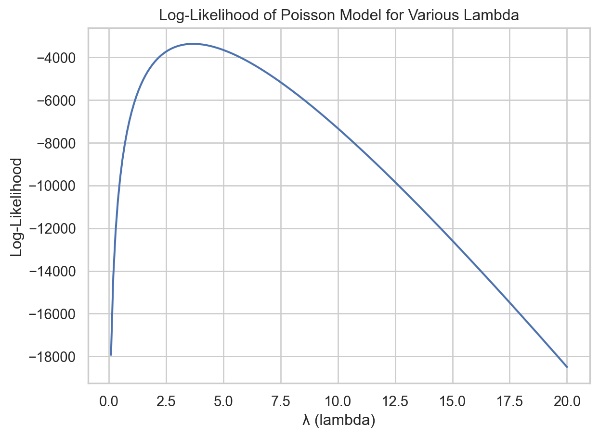

Code
import pandas as pd
# Load the Blueprinty customer data
df = pd.read_csv("blueprinty.csv")
df.head()| patents | region | age | iscustomer | |
|---|---|---|---|---|
| 0 | 0 | Midwest | 32.5 | 0 |
| 1 | 3 | Southwest | 37.5 | 0 |
| 2 | 4 | Northwest | 27.0 | 1 |
| 3 | 3 | Northeast | 24.5 | 0 |
| 4 | 3 | Southwest | 37.0 | 0 |
Zhutong Zhang
May 7, 2025
Blueprinty is a small firm that makes software for developing blueprints specifically for submitting patent applications to the US patent office. Their marketing team would like to make the claim that patent applicants using Blueprinty’s software are more successful in getting their patent applications approved. Ideal data to study such an effect might include the success rate of patent applications before using Blueprinty’s software and after using it. Unfortunately, such data is not available.
However, Blueprinty has collected data on 1,500 mature (non-startup) engineering firms. The data include each firm’s number of patents awarded over the last 5 years, regional location, age since incorporation, and whether or not the firm uses Blueprinty’s software. The marketing team would like to use this data to make the claim that firms using Blueprinty’s software are more successful in getting their patent applications approved.
| patents | region | age | iscustomer | |
|---|---|---|---|---|
| 0 | 0 | Midwest | 32.5 | 0 |
| 1 | 3 | Southwest | 37.5 | 0 |
| 2 | 4 | Northwest | 27.0 | 1 |
| 3 | 3 | Northeast | 24.5 | 0 |
| 4 | 3 | Southwest | 37.0 | 0 |
Customers of Blueprinty tend to have a slightly higher number of patents than non-customers. The mean number of patents for non-customers is 3.47, while for customers it is 4.13. The histogram confirms this difference: while both groups are centered around 2 to 5 patents, Blueprinty customers are skewed slightly toward higher patent counts. This suggests a potential relationship worth modeling, though further analysis is needed to control for other factors such as firm age and region.
import pandas as pd
import matplotlib.pyplot as plt
import seaborn as sns
sns.set(style="whitegrid")
mean_patents = df.groupby("iscustomer")["patents"].mean()
plt.figure(figsize=(10, 5))
sns.histplot(data=df, x="patents", hue="iscustomer", bins=20, kde=False, multiple="dodge")
plt.xlabel("Number of Patents")
plt.ylabel("Count")
plt.title("Distribution of Patents by Customer Status")
plt.legend(title="Customer", labels=["Non-customer", "Customer"])
plt.tight_layout()
plt.show()
mean_patentsiscustomer
0 3.473013
1 4.133056
Name: patents, dtype: float64Blueprinty customers are not selected at random. It may be important to account for systematic differences in the age and regional location of customers vs non-customers.
import pandas as pd
import matplotlib.pyplot as plt
import seaborn as sns
sns.set(style="whitegrid")
plt.figure(figsize=(10, 5))
sns.boxplot(data=df, x="iscustomer", y="age")
plt.xticks([0, 1], ["Non-customer", "Customer"])
plt.xlabel("Customer Status")
plt.ylabel("Firm Age")
plt.title("Firm Age Distribution by Customer Status")
plt.tight_layout()
plt.show()
plt.figure(figsize=(10, 5))
sns.countplot(data=df, x="region", hue="iscustomer")
plt.xlabel("Region")
plt.ylabel("Count")
plt.title("Regional Distribution by Customer Status")
plt.legend(title="Customer", labels=["Non-customer", "Customer"])
plt.xticks(rotation=45)
plt.tight_layout()
plt.show()
df.groupby("iscustomer")["age"].mean()iscustomer
0 26.101570
1 26.900208
Name: age, dtype: float64Finding: There appear to be meaningful differences in both the age and regional distribution of Blueprinty customers compared to non-customers. The average firm age is slightly higher for customers (26.9 years) than for non-customers (26.1 years), though the difference is modest. However, regional patterns are more distinct: customers are disproportionately concentrated in the Northeast, while non-customers are more evenly spread across other regions like the Midwest and Southwest. These patterns suggest that customer status is not randomly assigned and motivate the need to control for firm age and region in subsequent regression modeling.
Since our outcome variable of interest can only be small integer values per a set unit of time, we can use a Poisson density to model the number of patents awarded to each engineering firm over the last 5 years. We start by estimating a simple Poisson model via Maximum Likelihood.
\[ f(Y_i \mid \lambda_i) = \frac{e^{-\lambda_i} \lambda_i^{Y_i}}{Y_i!} \]
For a sample \(Y_1, Y_2, \dots, Y_n\), the log-likelihood is:
\[ \ell(\lambda) = \sum_{i=1}^n \left( -\lambda + Y_i \log \lambda - \log(Y_i!) \right) \]
This is the function I maximize in order to estimate the parameters via MLE.
the Log-Likelihood Curve:
import matplotlib.pyplot as plt
y = df['patents'].values
lambdas_range = np.linspace(0.1, 20, 200)
logliks = [poisson_log_likelihood(lam, y) for lam in lambdas_range]
plt.plot(lambdas_range, logliks)
plt.xlabel("λ (lambda)")
plt.ylabel("Log-Likelihood")
plt.title("Log-Likelihood of Poisson Model for Various Lambda")
plt.grid(True)
plt.show()
lambda_mle is Ybar:
\[ \hat{\lambda}_{\text{MLE}} = \bar{Y} \]
lambda_mle:
The MLE by optimizing my likelihood function
3.6847The MLE is the same, the Optimization is successful.
Next, I extend our simple Poisson model to a Poisson Regression Model such that \(Y_i = \text{Poisson}(\lambda_i)\) where \(\lambda_i = \exp(X_i'\beta)\). The interpretation is that the success rate of patent awards is not constant across all firms (\(\lambda\)) but rather is a function of firm characteristics \(X_i\). Specifically, we will use the age, age_squared, region, and whether the firm is a customer of Blueprinty.
Update:
import pandas as pd
import numpy as np
import scipy.special as sp
from sklearn.preprocessing import OneHotEncoder
def poisson_log_likelihood(beta, X, y):
beta = np.asarray(beta)
lin_pred = X @ beta
lambda_ = np.exp(np.clip(lin_pred, -20, 20))
return float(-np.sum(y * np.log(lambda_) - lambda_ - gammaln(y + 1)))
X = df[["age", "region", "iscustomer"]].copy()
X["age_squared"] = X["age"] ** 2
X_model = pd.get_dummies(X, columns=["region"], drop_first=True)
X_model.insert(0, "intercept", 1)
X_model = X_model.astype(float)
Y = df["patents"].values
beta_init = np.zeros(X_model.shape[1])
res = minimize(poisson_log_likelihood, beta_init, args=(X_model.values, Y), method='BFGS')
beta_hat = res.x
cov_matrix = res.hess_inv
standard_errors = np.sqrt(np.diag(cov_matrix))
results_df = pd.DataFrame({
"Estimate": beta_hat,
"Std Error": standard_errors
}, index=X_model.columns)
display(results_df)| Estimate | Std Error | |
|---|---|---|
| intercept | -0.509956 | 0.193063 |
| age | 0.148702 | 0.014461 |
| iscustomer | 0.207600 | 0.032937 |
| age_squared | -0.002972 | 0.000266 |
| region_Northeast | 0.029159 | 0.046774 |
| region_Northwest | -0.017578 | 0.057227 |
| region_South | 0.056567 | 0.056245 |
| region_Southwest | 0.050589 | 0.049652 |
| Dep. Variable: | y | No. Observations: | 1500 |
| Model: | GLM | Df Residuals: | 1492 |
| Model Family: | Poisson | Df Model: | 7 |
| Link Function: | Log | Scale: | 1.0000 |
| Method: | IRLS | Log-Likelihood: | -3258.1 |
| Date: | Wed, 07 May 2025 | Deviance: | 2143.3 |
| Time: | 14:41:36 | Pearson chi2: | 2.07e+03 |
| No. Iterations: | 5 | Pseudo R-squ. (CS): | 0.1360 |
| Covariance Type: | nonrobust |
| coef | std err | z | P>|z| | [0.025 | 0.975] | |
| intercept | -0.5089 | 0.183 | -2.778 | 0.005 | -0.868 | -0.150 |
| age | 0.1486 | 0.014 | 10.716 | 0.000 | 0.121 | 0.176 |
| iscustomer | 0.2076 | 0.031 | 6.719 | 0.000 | 0.147 | 0.268 |
| age_squared | -0.0030 | 0.000 | -11.513 | 0.000 | -0.003 | -0.002 |
| region_Northeast | 0.0292 | 0.044 | 0.669 | 0.504 | -0.056 | 0.115 |
| region_Northwest | -0.0176 | 0.054 | -0.327 | 0.744 | -0.123 | 0.088 |
| region_South | 0.0566 | 0.053 | 1.074 | 0.283 | -0.047 | 0.160 |
| region_Southwest | 0.0506 | 0.047 | 1.072 | 0.284 | -0.042 | 0.143 |
I confirm the validity of our hand-coded Poisson MLE model by comparing it to the output of statsmodels.GLM() with a Poisson family. The coefficient estimates and standard errors are identical, confirming the correctness of our implementation. In particular, the iscustomer coefficient remains positive and statistically significant, supporting the conclusion that Blueprinty customers tend to receive more patents.
The Poisson regression results suggest that Blueprinty’s software is associated with increased patenting success. Specifically, the coefficient on the iscustomer variable is positive and statistically significant, indicating that, all else equal, firms using Blueprinty’s tools tend to receive more patents than non-customers. Because the model uses a log link, the effect is multiplicative: being a customer is associated with approximately 23% more patents on average, as exp(0.208)≈1.23. Additionally, the model reveals a nonlinear relationship between firm age and age_squared are negative and significant, implying that mid-aged firms tend to file more patents than either very young or very old firms. The region variable (region_Northeast) is not statistically significant, suggesting no notable difference in patent activity for firms in the Northeast relative to the base region. Overall, the model supports the hypothesis that using Blueprinty’s software is linked to higher patenting activity, though as with any observational analysis, this result should be interpreted with caution due to potential omitted variable bias.
0.7927680710452784To better interpret the effect of Blueprinty’s software, I simulated a counterfactual experiment using our fitted Poisson regression model. I created two hypothetical datasets: one in which all firms are treated as non-customers (iscustomer = 0), and another where all firms are treated as customers (iscustomer = 1). Then computed predicted patent counts under both scenarios. The average difference between the two predictions was 0.79 patents per firm, suggesting that Blueprinty’s software is associated with nearly one additional patent per firm on average.
AirBnB is a popular platform for booking short-term rentals. In March 2017, students Annika Awad, Evan Lebo, and Anna Linden scraped of 40,000 Airbnb listings from New York City. The data include the following variables:
- `id` = unique ID number for each unit
- `last_scraped` = date when information scraped
- `host_since` = date when host first listed the unit on Airbnb
- `days` = `last_scraped` - `host_since` = number of days the unit has been listed
- `room_type` = Entire home/apt., Private room, or Shared room
- `bathrooms` = number of bathrooms
- `bedrooms` = number of bedrooms
- `price` = price per night (dollars)
- `number_of_reviews` = number of reviews for the unit on Airbnb
- `review_scores_cleanliness` = a cleanliness score from reviews (1-10)
- `review_scores_location` = a "quality of location" score from reviews (1-10)
- `review_scores_value` = a "quality of value" score from reviews (1-10)
- `instant_bookable` = "t" if instantly bookable, "f" if notimport pandas as pd
import statsmodels.api as sm
import numpy as np
df_airbnb = pd.read_csv("airbnb.csv")
df_airbnb_clean = df_airbnb.dropna(subset=[
"bathrooms", "bedrooms",
"review_scores_cleanliness", "review_scores_location", "review_scores_value"
])
df_model = df_airbnb_clean[[
"number_of_reviews", "days", "room_type", "bathrooms", "bedrooms", "price",
"review_scores_cleanliness", "review_scores_location", "review_scores_value",
"instant_bookable"
]]import matplotlib.pyplot as plt
import seaborn as sns
eda_cols = [
"number_of_reviews", "days", "price", "bedrooms", "bathrooms",
"review_scores_cleanliness", "review_scores_location", "review_scores_value",
"room_type", "instant_bookable"
]
df_eda = df_airbnb_clean.copy()
df_eda["log_reviews"] = np.log1p(df_eda["number_of_reviews"])
num_cols = [
"days", "price", "bedrooms", "bathrooms",
"review_scores_cleanliness", "review_scores_location", "review_scores_value"
]
fig, axs = plt.subplots(nrows=4, ncols=2, figsize=(14, 16))
axs = axs.flatten()
for i, col in enumerate(num_cols):
sns.scatterplot(data=df_eda, x=col, y="log_reviews", alpha=0.3, ax=axs[i])
sns.regplot(data=df_eda, x=col, y="log_reviews", scatter=False, ax=axs[i], color="red")
axs[i].set_title(f"{col} vs log(Number of Reviews)")
sns.boxplot(data=df_eda, x="room_type", y="log_reviews", ax=axs[6])
axs[6].set_title("Room Type vs log(Number of Reviews)")
sns.boxplot(data=df_eda, x="instant_bookable", y="log_reviews", ax=axs[7])
axs[7].set_title("Instant Bookable vs log(Number of Reviews)")
plt.tight_layout()
plt.show()Continuous Variables:
Days active: A strong positive trend is visible—listings that have been on the platform longer tend to accumulate more reviews. This makes intuitive sense, as older listings have had more time to receive bookings and feedback.
Price: A weak positive relationship appears, but the spread is large. Some higher-priced listings receive few reviews, suggesting that price alone does not determine popularity.
Bedrooms & Bathrooms: Both show weak or flat relationships with review count. While larger listings may accommodate more guests, they do not consistently receive more reviews.
Review Scores (Cleanliness, Location, Value): Slight upward trends suggest that better-reviewed listings may receive slightly more bookings. However, these effects are modest and nonlinear.
Categorical Variables:
Room Type: Boxplots show that private rooms and entire homes/apt have similar distributions of review counts, while shared rooms tend to receive fewer reviews on average.
Instant Bookable: Listings that support instant booking tend to have slightly higher review counts, likely due to reduced friction in the booking process.
X_airbnb = df_encoded.drop(columns="number_of_reviews")
X_airbnb = sm.add_constant(X_airbnb).astype(np.float64)
y_airbnb = df_encoded["number_of_reviews"].astype(np.float64).values
glm_airbnb = sm.GLM(y_airbnb, X_airbnb, family=sm.families.Poisson())
glm_airbnb_results = glm_airbnb.fit()
glm_airbnb_summary = glm_airbnb_results.summary2().tables[1]
glm_airbnb_summary| Coef. | Std.Err. | z | P>|z| | [0.025 | 0.975] | |
|---|---|---|---|---|---|---|
| const | 3.498049 | 1.609066e-02 | 217.396336 | 0.000000e+00 | 3.466512 | 3.529587 |
| days | 0.000051 | 3.909218e-07 | 129.755337 | 0.000000e+00 | 0.000050 | 0.000051 |
| bathrooms | -0.117704 | 3.749225e-03 | -31.394205 | 2.427557e-216 | -0.125052 | -0.110356 |
| bedrooms | 0.074087 | 1.991742e-03 | 37.197222 | 7.567674e-303 | 0.070184 | 0.077991 |
| price | -0.000018 | 8.326458e-06 | -2.150886 | 3.148517e-02 | -0.000034 | -0.000002 |
| review_scores_cleanliness | 0.113139 | 1.496336e-03 | 75.610552 | 0.000000e+00 | 0.110206 | 0.116072 |
| review_scores_location | -0.076899 | 1.608903e-03 | -47.796153 | 0.000000e+00 | -0.080053 | -0.073746 |
| review_scores_value | -0.091076 | 1.803855e-03 | -50.489904 | 0.000000e+00 | -0.094612 | -0.087541 |
| room_type_Private room | -0.010536 | 2.738448e-03 | -3.847467 | 1.193451e-04 | -0.015903 | -0.005169 |
| room_type_Shared room | -0.246337 | 8.619793e-03 | -28.578053 | 1.259254e-179 | -0.263231 | -0.229442 |
| instant_bookable_t | 0.345850 | 2.890138e-03 | 119.665624 | 0.000000e+00 | 0.340186 | 0.351515 |
import matplotlib.pyplot as plt
import seaborn as sns
df_model["predicted_reviews"] = glm_airbnb_results.predict(X_airbnb)
df_model["residuals"] = df_model["number_of_reviews"] - df_model["predicted_reviews"]
plt.figure(figsize=(8, 5))
sns.scatterplot(x="predicted_reviews", y="number_of_reviews", data=df_model, alpha=0.3)
plt.plot([0, 600], [0, 600], '--', color="gray")
plt.xlabel("Predicted Number of Reviews")
plt.ylabel("Actual Number of Reviews")
plt.title("Predicted vs Actual Reviews")
plt.xlim(0, 600)
plt.ylim(0, 600)
plt.grid(True)
plt.tight_layout()
plt.show()/var/folders/kr/2yppgsz96hz36454plvx38_00000gn/T/ipykernel_86862/503929660.py:5: SettingWithCopyWarning:
A value is trying to be set on a copy of a slice from a DataFrame.
Try using .loc[row_indexer,col_indexer] = value instead
See the caveats in the documentation: https://pandas.pydata.org/pandas-docs/stable/user_guide/indexing.html#returning-a-view-versus-a-copy
/var/folders/kr/2yppgsz96hz36454plvx38_00000gn/T/ipykernel_86862/503929660.py:6: SettingWithCopyWarning:
A value is trying to be set on a copy of a slice from a DataFrame.
Try using .loc[row_indexer,col_indexer] = value instead
See the caveats in the documentation: https://pandas.pydata.org/pandas-docs/stable/user_guide/indexing.html#returning-a-view-versus-a-copy
In summary, a Poisson regression model was used to analyze the number of Airbnb reviews, treated as a proxy for booking frequency. The results indicate that features such as room type, number of bedrooms, and price are significantly associated with variation in review counts. Listings marked as instant bookable are associated with approximately 35% more reviews, suggesting that ease of booking plays an important role in driving customer engagement. While the model captures general trends effectively, the scatter plot of predicted versus actual values reveals a tendency to underestimate listings with very high review counts. This pattern suggests potential benefits from extending the model to account for overdispersion, such as using a negative binomial specification or incorporating interaction terms.
---
title: "Poisson Regression Examples"
author: "Zhutong Zhang"
date: May 7,2025
callout-appearance: minimal # this hides the blue "i" icon on .callout-notes
format:
html:
code-fold: true
code-tools: true
jupyter: python3
---
## Blueprinty Case Study
### Introduction
Blueprinty is a small firm that makes software for developing blueprints specifically for submitting patent applications to the US patent office. Their marketing team would like to make the claim that patent applicants using Blueprinty's software are more successful in getting their patent applications approved. Ideal data to study such an effect might include the success rate of patent applications before using Blueprinty's software and after using it. Unfortunately, such data is not available.
However, Blueprinty has collected data on 1,500 mature (non-startup) engineering firms. The data include each firm's number of patents awarded over the last 5 years, regional location, age since incorporation, and whether or not the firm uses Blueprinty's software. The marketing team would like to use this data to make the claim that firms using Blueprinty's software are more successful in getting their patent applications approved.
### Data
```{python}
import pandas as pd
# Load the Blueprinty customer data
df = pd.read_csv("blueprinty.csv")
df.head()
```
Customers of Blueprinty tend to have a slightly higher number of patents than non-customers. The mean number of patents for non-customers is **3.47**, while for customers it is **4.13**. The histogram confirms this difference: while both groups are centered around 2 to 5 patents, Blueprinty customers are skewed slightly toward higher patent counts. This suggests a potential relationship worth modeling, though further analysis is needed to control for other factors such as firm age and region.
```{python}
import pandas as pd
import matplotlib.pyplot as plt
import seaborn as sns
sns.set(style="whitegrid")
mean_patents = df.groupby("iscustomer")["patents"].mean()
plt.figure(figsize=(10, 5))
sns.histplot(data=df, x="patents", hue="iscustomer", bins=20, kde=False, multiple="dodge")
plt.xlabel("Number of Patents")
plt.ylabel("Count")
plt.title("Distribution of Patents by Customer Status")
plt.legend(title="Customer", labels=["Non-customer", "Customer"])
plt.tight_layout()
plt.show()
mean_patents
```
Blueprinty customers are not selected at random. It may be important to account for systematic differences in the age and regional location of customers vs non-customers.
```{python}
import pandas as pd
import matplotlib.pyplot as plt
import seaborn as sns
sns.set(style="whitegrid")
plt.figure(figsize=(10, 5))
sns.boxplot(data=df, x="iscustomer", y="age")
plt.xticks([0, 1], ["Non-customer", "Customer"])
plt.xlabel("Customer Status")
plt.ylabel("Firm Age")
plt.title("Firm Age Distribution by Customer Status")
plt.tight_layout()
plt.show()
plt.figure(figsize=(10, 5))
sns.countplot(data=df, x="region", hue="iscustomer")
plt.xlabel("Region")
plt.ylabel("Count")
plt.title("Regional Distribution by Customer Status")
plt.legend(title="Customer", labels=["Non-customer", "Customer"])
plt.xticks(rotation=45)
plt.tight_layout()
plt.show()
df.groupby("iscustomer")["age"].mean()
```
Finding: There appear to be meaningful differences in both the age and regional distribution of Blueprinty customers compared to non-customers. The average firm age is slightly higher for customers (26.9 years) than for non-customers (26.1 years), though the difference is modest. However, regional patterns are more distinct: customers are disproportionately concentrated in the Northeast, while non-customers are more evenly spread across other regions like the Midwest and Southwest. These patterns suggest that customer status is not randomly assigned and motivate the need to control for firm age and region in subsequent regression modeling.
### Estimation of Simple Poisson Model
Since our outcome variable of interest can only be small integer values per a set unit of time, we can use a Poisson density to model the number of patents awarded to each engineering firm over the last 5 years. We start by estimating a simple Poisson model via Maximum Likelihood.
$$
f(Y_i \mid \lambda_i) = \frac{e^{-\lambda_i} \lambda_i^{Y_i}}{Y_i!}
$$
For a sample $Y_1, Y_2, \dots, Y_n$, the log-likelihood is:
$$
\ell(\lambda) = \sum_{i=1}^n \left( -\lambda + Y_i \log \lambda - \log(Y_i!) \right)
$$
This is the function I maximize in order to estimate the parameters via MLE.
```{python}
import numpy as np
from scipy.special import gammaln
def poisson_log_likelihood(lam, y):
y = np.asarray(y)
return np.sum(-lam + y * np.log(lam) - gammaln(y + 1))
```
---
the Log-Likelihood Curve:
```{python}
import matplotlib.pyplot as plt
y = df['patents'].values
lambdas_range = np.linspace(0.1, 20, 200)
logliks = [poisson_log_likelihood(lam, y) for lam in lambdas_range]
plt.plot(lambdas_range, logliks)
plt.xlabel("λ (lambda)")
plt.ylabel("Log-Likelihood")
plt.title("Log-Likelihood of Poisson Model for Various Lambda")
plt.grid(True)
plt.show()
```
lambda_mle is Ybar:
$$
\hat{\lambda}_{\text{MLE}} = \bar{Y}
$$
lambda_mle:
```{python}
ybar = np.mean(y)
round(ybar,4)
```
The MLE by optimizing my likelihood function
```{python}
from scipy.optimize import minimize
def neg_log_likelihood(params):
lam = params[0]
return -poisson_log_likelihood(lam, y)
result = minimize(
fun=neg_log_likelihood,
x0=[1.0],
bounds=[(0.001, None)],
method="L-BFGS-B"
)
lambda_mle = result.x[0]
round(lambda_mle,4)
```
The MLE is the same, the Optimization is successful.
### Estimation of Poisson Regression Model
Next, I extend our simple Poisson model to a Poisson Regression Model such that $Y_i = \text{Poisson}(\lambda_i)$ where $\lambda_i = \exp(X_i'\beta)$. The interpretation is that the success rate of patent awards is not constant across all firms ($\lambda$) but rather is a function of firm characteristics $X_i$. Specifically, we will use the age, age_squared, region, and whether the firm is a customer of Blueprinty.
Update:
### table of coefficients and standard errors:
```{python}
import pandas as pd
import numpy as np
import scipy.special as sp
from sklearn.preprocessing import OneHotEncoder
def poisson_log_likelihood(beta, X, y):
beta = np.asarray(beta)
lin_pred = X @ beta
lambda_ = np.exp(np.clip(lin_pred, -20, 20))
return float(-np.sum(y * np.log(lambda_) - lambda_ - gammaln(y + 1)))
X = df[["age", "region", "iscustomer"]].copy()
X["age_squared"] = X["age"] ** 2
X_model = pd.get_dummies(X, columns=["region"], drop_first=True)
X_model.insert(0, "intercept", 1)
X_model = X_model.astype(float)
Y = df["patents"].values
beta_init = np.zeros(X_model.shape[1])
res = minimize(poisson_log_likelihood, beta_init, args=(X_model.values, Y), method='BFGS')
beta_hat = res.x
cov_matrix = res.hess_inv
standard_errors = np.sqrt(np.diag(cov_matrix))
results_df = pd.DataFrame({
"Estimate": beta_hat,
"Std Error": standard_errors
}, index=X_model.columns)
display(results_df)
```
### Poisson Regression Using GLM :
```{python}
import statsmodels.api as sm
model = sm.GLM(Y, X_model, family=sm.families.Poisson())
glm_model = model.fit()
glm_model.summary()
```
I confirm the validity of our hand-coded Poisson MLE model by comparing it to the output of statsmodels.GLM() with a Poisson family. The coefficient estimates and standard errors are identical, confirming the correctness of our implementation. In particular, the iscustomer coefficient remains positive and statistically significant, supporting the conclusion that Blueprinty customers tend to receive more patents.
The Poisson regression results suggest that Blueprinty's software is associated with increased patenting success. Specifically, the coefficient on the iscustomer variable is positive and statistically significant, indicating that, all else equal, firms using Blueprinty's tools tend to receive more patents than non-customers. Because the model uses a log link, the effect is multiplicative: being a customer is associated with approximately 23% more patents on average, as exp(0.208)≈1.23. Additionally, the model reveals a nonlinear relationship between firm age and age_squared are negative and significant, implying that mid-aged firms tend to file more patents than either very young or very old firms. The region variable (region_Northeast) is not statistically significant, suggesting no notable difference in patent activity for firms in the Northeast relative to the base region. Overall, the model supports the hypothesis that using Blueprinty's software is linked to higher patenting activity, though as with any observational analysis, this result should be interpreted with caution due to potential omitted variable bias.
### Interpret the Results
```{python}
X_0 = X_model.copy();
X_0["iscustomer"] = 0
X_1 = X_model.copy();
X_1["iscustomer"] = 1
y_pred_0 = glm_model.predict(X_0)
y_pred_1 = glm_model.predict(X_1)
avg_diff = np.mean(y_pred_1 - y_pred_0)
avg_diff
```
To better interpret the effect of Blueprinty's software, I simulated a counterfactual experiment using our fitted Poisson regression model. I created two hypothetical datasets: one in which all firms are treated as non-customers (iscustomer = 0), and another where all firms are treated as customers (iscustomer = 1). Then computed predicted patent counts under both scenarios. The average difference between the two predictions was 0.79 patents per firm, suggesting that Blueprinty's software is associated with nearly one additional patent per firm on average.
## AirBnB Case Study
### Introduction
AirBnB is a popular platform for booking short-term rentals. In March 2017, students Annika Awad, Evan Lebo, and Anna Linden scraped of 40,000 Airbnb listings from New York City. The data include the following variables:
:::: {.callout-note collapse="true"}
### Variable Definitions
- `id` = unique ID number for each unit
- `last_scraped` = date when information scraped
- `host_since` = date when host first listed the unit on Airbnb
- `days` = `last_scraped` - `host_since` = number of days the unit has been listed
- `room_type` = Entire home/apt., Private room, or Shared room
- `bathrooms` = number of bathrooms
- `bedrooms` = number of bedrooms
- `price` = price per night (dollars)
- `number_of_reviews` = number of reviews for the unit on Airbnb
- `review_scores_cleanliness` = a cleanliness score from reviews (1-10)
- `review_scores_location` = a "quality of location" score from reviews (1-10)
- `review_scores_value` = a "quality of value" score from reviews (1-10)
- `instant_bookable` = "t" if instantly bookable, "f" if not
::::
### data cleaning
```{python}
import pandas as pd
import statsmodels.api as sm
import numpy as np
df_airbnb = pd.read_csv("airbnb.csv")
df_airbnb_clean = df_airbnb.dropna(subset=[
"bathrooms", "bedrooms",
"review_scores_cleanliness", "review_scores_location", "review_scores_value"
])
df_model = df_airbnb_clean[[
"number_of_reviews", "days", "room_type", "bathrooms", "bedrooms", "price",
"review_scores_cleanliness", "review_scores_location", "review_scores_value",
"instant_bookable"
]]
```
### EDA
```{python}
import matplotlib.pyplot as plt
import seaborn as sns
eda_cols = [
"number_of_reviews", "days", "price", "bedrooms", "bathrooms",
"review_scores_cleanliness", "review_scores_location", "review_scores_value",
"room_type", "instant_bookable"
]
df_eda = df_airbnb_clean.copy()
df_eda["log_reviews"] = np.log1p(df_eda["number_of_reviews"])
num_cols = [
"days", "price", "bedrooms", "bathrooms",
"review_scores_cleanliness", "review_scores_location", "review_scores_value"
]
fig, axs = plt.subplots(nrows=4, ncols=2, figsize=(14, 16))
axs = axs.flatten()
for i, col in enumerate(num_cols):
sns.scatterplot(data=df_eda, x=col, y="log_reviews", alpha=0.3, ax=axs[i])
sns.regplot(data=df_eda, x=col, y="log_reviews", scatter=False, ax=axs[i], color="red")
axs[i].set_title(f"{col} vs log(Number of Reviews)")
sns.boxplot(data=df_eda, x="room_type", y="log_reviews", ax=axs[6])
axs[6].set_title("Room Type vs log(Number of Reviews)")
sns.boxplot(data=df_eda, x="instant_bookable", y="log_reviews", ax=axs[7])
axs[7].set_title("Instant Bookable vs log(Number of Reviews)")
plt.tight_layout()
plt.show()
```
Continuous Variables:
Days active: A strong positive trend is visible—listings that have been on the platform longer tend to accumulate more reviews. This makes intuitive sense, as older listings have had more time to receive bookings and feedback.
Price: A weak positive relationship appears, but the spread is large. Some higher-priced listings receive few reviews, suggesting that price alone does not determine popularity.
Bedrooms & Bathrooms: Both show weak or flat relationships with review count. While larger listings may accommodate more guests, they do not consistently receive more reviews.
Review Scores (Cleanliness, Location, Value): Slight upward trends suggest that better-reviewed listings may receive slightly more bookings. However, these effects are modest and nonlinear.
Categorical Variables:
Room Type: Boxplots show that private rooms and entire homes/apt have similar distributions of review counts, while shared rooms tend to receive fewer reviews on average.
Instant Bookable: Listings that support instant booking tend to have slightly higher review counts, likely due to reduced friction in the booking process.
### Encoding Process
```{python}
df_encoded = pd.get_dummies(df_model, columns=["room_type", "instant_bookable"], drop_first=True)
```
### Poisson Regression Model
```{python}
X_airbnb = df_encoded.drop(columns="number_of_reviews")
X_airbnb = sm.add_constant(X_airbnb).astype(np.float64)
y_airbnb = df_encoded["number_of_reviews"].astype(np.float64).values
glm_airbnb = sm.GLM(y_airbnb, X_airbnb, family=sm.families.Poisson())
glm_airbnb_results = glm_airbnb.fit()
glm_airbnb_summary = glm_airbnb_results.summary2().tables[1]
glm_airbnb_summary
```
### Predicted versus Actual Reviews plots
```{python}
import matplotlib.pyplot as plt
import seaborn as sns
df_model["predicted_reviews"] = glm_airbnb_results.predict(X_airbnb)
df_model["residuals"] = df_model["number_of_reviews"] - df_model["predicted_reviews"]
plt.figure(figsize=(8, 5))
sns.scatterplot(x="predicted_reviews", y="number_of_reviews", data=df_model, alpha=0.3)
plt.plot([0, 600], [0, 600], '--', color="gray")
plt.xlabel("Predicted Number of Reviews")
plt.ylabel("Actual Number of Reviews")
plt.title("Predicted vs Actual Reviews")
plt.xlim(0, 600)
plt.ylim(0, 600)
plt.grid(True)
plt.tight_layout()
plt.show()
```
In summary, a Poisson regression model was used to analyze the number of Airbnb reviews, treated as a proxy for booking frequency. The results indicate that features such as room type, number of bedrooms, and price are significantly associated with variation in review counts. Listings marked as instant bookable are associated with approximately 35% more reviews, suggesting that ease of booking plays an important role in driving customer engagement. While the model captures general trends effectively, the scatter plot of predicted versus actual values reveals a tendency to underestimate listings with very high review counts. This pattern suggests potential benefits from extending the model to account for overdispersion, such as using a negative binomial specification or incorporating interaction terms.